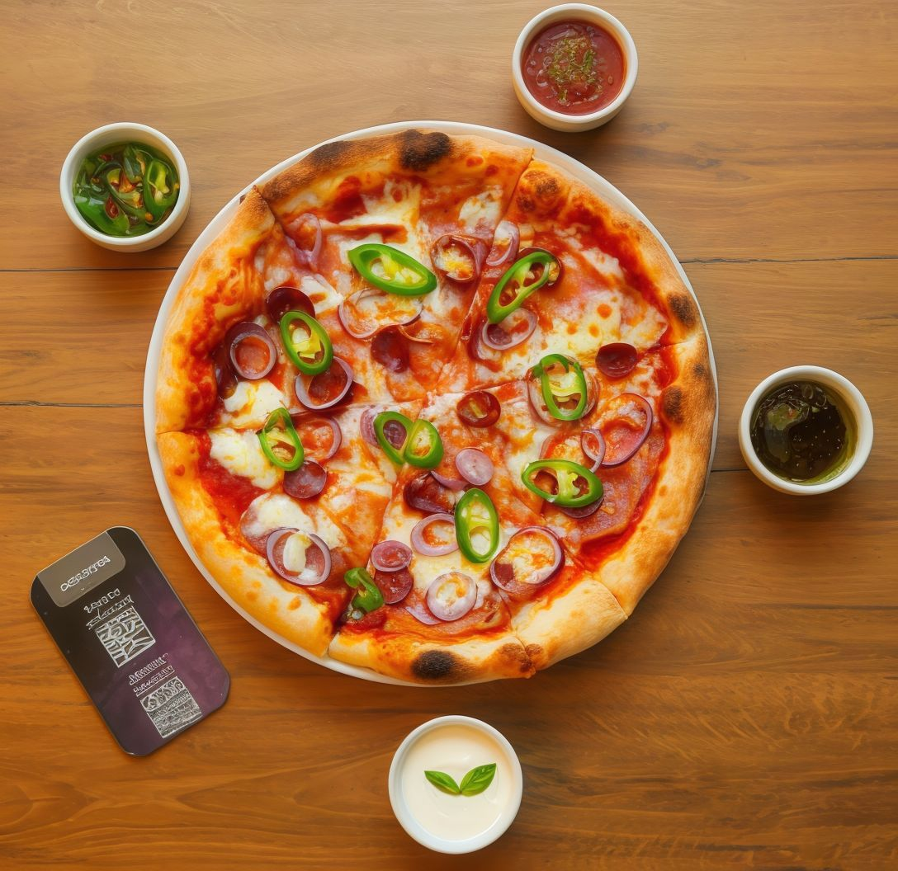
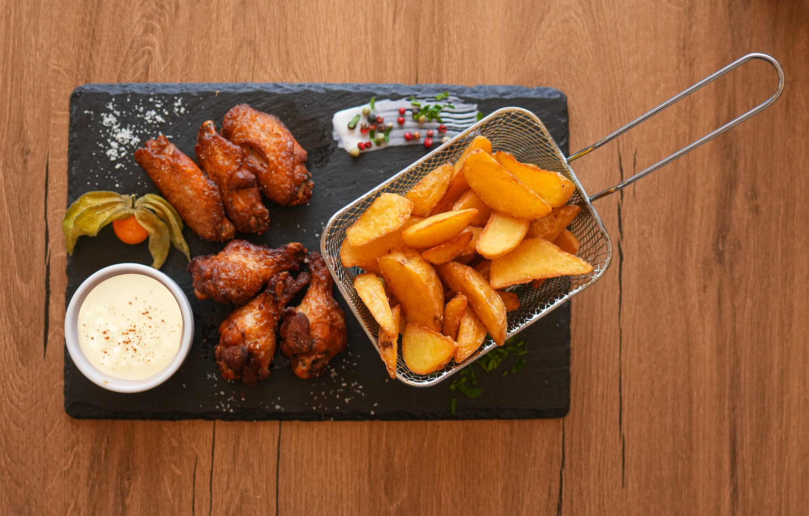

Pizza Ungurească Favorit
51 leiSos roșii, mozzarella, șuncă, bacon, cârnat picant, ceapă roșie, ardei iute

Preparate tradiționale românești și ardelenești, pizza coaptă pe vatră și un loc cald, primitor pe str. Vasile Alecsandri. Vibe fresh, gusturi autentice.
Norema s-a deschis la finalul lui 2022 pe str. Vasile Alecsandri, chiar în centrul orașului Oradea, cu o idee simplă: mâncare gătită cu grijă, din ingrediente proaspete, servită de oameni prietenoși.
La noi găsești bucătărie tradițională românească și ardelenească — ciorbe fierbinți, papricaș cu găluște, sarmale de sezon și deserturi de casă — alături de pizza coaptă pe vatră, paste și burgeri pentru cei care vor ceva mai lejer.
Ne-am redeschis cu un concept fresh și un meniu extins, dar am păstrat exact ce contează: porții generoase, gust autentic și o atmosferă caldă în care te simți bine venit de fiecare dată.

Trei motive pentru care orădenii revin la noi săptămână de săptămână.
Peste 15 sortimente coapte pe vatră — de la Ungurească și Românească, la Diavola și Quattro Formaggi. Blat pufos, ingrediente adevărate.
Ciorbe fierbinți, papricaș cu găluște, șnițele, papanași cu smântână — rețete tradiționale, gătite proaspăt în fiecare zi.
Locație primitoare pentru până la 40 de persoane — botezuri, aniversări, mese în familie. Ne ocupăm noi de tot.
Câteva dintre preparatele și atmosfera care te așteaptă la Norema.
 Coaste BBQAtmosfera Norema
Coaste BBQAtmosfera Norema Burgeri Norema
Burgeri NoremaOrădenii apreciază gustul autentic, porțiile generoase și oamenii primitori.
„Mâncare gustoasă, preparate proaspete și porții generoase. Gustul autentic al preparatelor tradiționale se simte în fiecare fel.”
„Personal prietenos, atent și rapid. O locație plăcută și primitoare — exact atmosfera de care aveai nevoie după o zi lungă.”
„Deserturi proaspete și variație mare în meniu. Papanașii sunt exact ca la mama acasă. Revenim cu drag!”